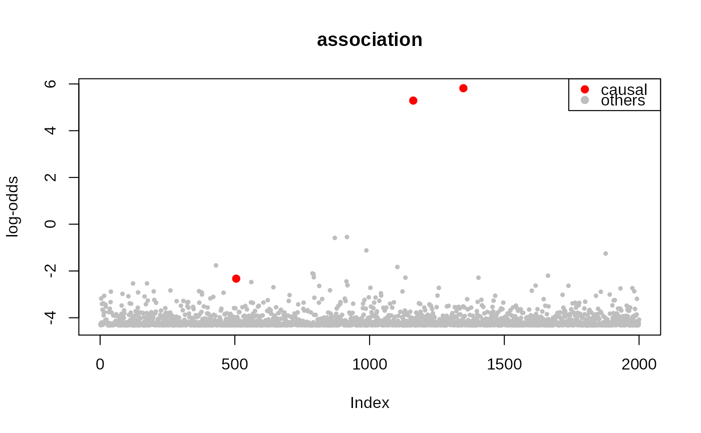

fit.zqtl.RdVariational inference of zQTL regression
fit.zqtl(effect, effect.se, X)
| effect | Marginal effect size matrix (SNP x trait) |
|---|---|
| effect.se | Marginal effect size standard error matrix (SNP x trait) |
| X | Design matrix (reference Ind x SNP) |
| n | sample size of actual data (will ignore if n = 0) |
| multi.C | multivariate SNP confounding factors (SNP x confounder; default: NULL) |
| univar.C | univariate SNP confounding factors (SNP x confounder; default: NULL) |
| factored | Fit factored QTL model (default: FALSE) |
| options | A list of inference/optimization options. |
| do.hyper | Hyper parameter tuning (default: FALSE) |
| do.rescale | Rescale z-scores by standard deviation (default: FALSE) |
| tau | Fixed value of tau |
| pi | Fixed value of pi |
| tau.lb | Lower-bound of tau (default: -10) |
| tau.ub | Upper-bound of tau (default: -4) |
| pi.lb | Lower-bound of pi (default: -4) |
| pi.ub | Upper-bound of pi (default: -1) |
| tol | Convergence criterion (default: 1e-4) |
| gammax | Maximum precision (default: 1000) |
| rate | Update rate (default: 1e-2) |
| decay | Update rate decay (default: 0) |
| jitter | SD of random jitter for mediation & factorization (default: 0.1) |
| nsample | Number of stochastic samples (default: 10) |
| vbiter | Number of variational Bayes iterations (default: 2000) |
| verbose | Verbosity (default: TRUE) |
| k | Rank of the factored model (default: 1) |
| svd.init | initialize by SVD (default: TRUE) |
| right.nn | non-negativity in factored effect (default: FALSE) |
| mu.min | mininum non-negativity weight (default: 0.01) |
| print.interv | Printing interval (default: 10) |
| nthread | Number of threads during calculation (default: 1) |
| eigen.tol | Error tolerance in Eigen decomposition (default: 0.01) |
| do.stdize | Standardize (default: TRUE) |
| out.residual | estimate residual z-scores (default: FALSE) |
| do.var.calc | variance calculation (default: FALSE) |
| nboot | Number of bootstraps followed by finemapping (default: 0) |
| nboot.var | Number of bootstraps for variance estimation (default: 100) |
| scale.var | Scaled variance calculation (default: FALSE) |
| min.se | Minimum level of SE (default: 1e-4) |
| rseed | Random seed |
a list of variational inference results.
param: sparse genetic effect size (theta, theta.var, lodds)
conf.multi: association with multivariate confounding variables
conf.uni: association with univariate confounding variables
resid: residuals
gwas.clean: cleansed version of univariate GWAS effects
var: variance decomposition results
llik: log-likelihood trace over the optimization
Estimate true effect matrix from marginal effect sizes and standard errors (Hormozdiari et al., 2015; Zhu and Stephens, 2016): $$\mathbf{Z}_{t} \sim \mathcal{N}\!\left(R E^{-1} \boldsymbol{\theta}_{t}, R\right)$$ where R is \(p \times p\) LD / covariance matrix; E is expected squared effect size matrix (\(\textsf{se}[\boldsymbol{\theta}_{t}^{\textsf{marg}}] + n^{-1} \langle \boldsymbol{\theta}_{t}^{\textsf{marg}} \rangle^{2}\) matrix, diagonal); \(\mathbf{z}_{t}\) is \(p \times 1\) z-score vector of trait \(t\), or \(\mathbf{z}_{t} = \boldsymbol{\theta}_{t}^{\textsf{marg}}/ \textsf{se}[\boldsymbol{\theta}_{t}^{\textsf{marg}}]\).
In basic zQTL model, spasrse parameter matrix, \(\theta\) was modeled with spike-slab prior. We carry out posterior inference by variational inference with surrogate distribution first introduced in Carbonetto and Stephens (2012):
$$q(\theta|\alpha,\beta,\gamma) = \alpha \mathcal{N}\!\left(\beta,\gamma^{-1}\right)$$
We reparameterized \(\alpha = \boldsymbol{\sigma}\!\left(\pi + \delta\right)\), and \(\gamma = \gamma_{\textsf{max}}\boldsymbol{\sigma}\!\left(- \tau + \lambda \right)\) for numerical stability.
In factored zQTL model, we decompose sparse effect: $$\boldsymbol{\theta}_{t} = \boldsymbol{\theta}^{\textsf{left}} \boldsymbol{\theta}_{t}^{\textsf{right}}$$
n <- 500 p <- 2000 m <- 1 set.seed(1) .rnorm <- function(a, b) matrix(rnorm(a * b), a, b) X <- .rnorm(n, p) Y <- matrix(0, n, m) h2 <- 0.25 c.snps <- sample(p, 3) theta <- .rnorm(3, m) * sqrt(h2 / 3) Y <- X[, c.snps, drop=FALSE] %*% theta + .rnorm(n, m) * sqrt(1 - h2) temp <- lapply(1:p, function(j) { summary(lm(Y ~ X[, j]))$coefficients[2, 1:2, drop = FALSE] }) stat <- do.call(rbind, temp) xy.beta <- as.matrix(stat[, 1, drop = FALSE]) xy.se <- as.matrix(stat[, 2, drop = FALSE]) out <- zqtl::fit.zqtl(xy.beta, xy.se, X, vbiter = 3000, gammax = 1e3, pi = 0, eigen.tol = 1e-2, do.var.calc = TRUE) plot(out$param$lodds, main = 'association', pch = 19, cex = .5, col = 'gray', ylab = 'log-odds').var = c(out$var$param$mean, out$var$conf.mult$mean, out$var$conf.uni$mean, out$var$resid$mean, out$var$tot) barplot(height = 10^(.var), col = 2:6, names.arg = c('gen', 'c1', 'c2', 'resid', 'tot'), horiz = TRUE)